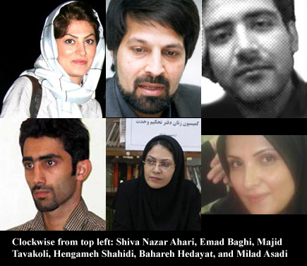

پذيرش > اخبار > مصاحبه های تبلیغاتی احمدی نژاد، همزمان با محکومیت های طولانی فعالان جوان


 مصاحبه های تبلیغاتی احمدی نژاد، همزمان با محکومیت های طولانی فعالان جوان مصاحبه های تبلیغاتی احمدی نژاد، همزمان با محکومیت های طولانی فعالان جوان
31 شهریور 1389 - - نسخه قابل چاپ
کمپین بین المللی حقوق بشر در ایران: کمپین بین المللی حقوق بشر در ایران امروز اعلام کرد که درست در زمانی که محمود احمدی نژاد در طول یک هفته فعالیتهای تبلیغاتی خویش در نیویورک ادعا میکند که ایران به حقوق بشر و آزادی احترام می گذارد، چندین دانشجوی جوان، مدافعان حقوق بشر، و روزنامه نگاران ایرانی ظرف روزهای اخیر به حبس های طولانی محکوم شده اند.
کمپین تاکید کرد که در چندین مورد، جوانان ایرانی به جرم “توهین به ریس جمهور” زندانی شده اند. در حال حاضر حداقل ۵۰۰ زندانی عقیدتی در زندانهای ایران به سر می برند.
آرون رودز، سخنگوی کمپین بین المللی حقوق بشر در ایران گفت: “ریاکاری و بدبینی رییس جمهور ایران که هم اکنون در نیویورک قابل مشاهده است، به کرامت وجود افرادی که وی ادعای نمایندگی آنان را دارد و به عزت جامعهء بین المللی حقوق بشر اهانت می کند.”
مقارن با ورود محمود احمدی نژاد به نیویورک، دو مدافع سرشناس حقوق بشردر ایران، عمادالدین باقی و شیوا نظرآهاری هر یک به شش سال زندان محکوم شده اند. همچنین حکم هشت سال و نیم زندان فعال دانشجویی مجید توکلی نیز در مرحله تجدید نظر مورد تایید قرار گرفته است. فعالان جوان دیگری مانند بهاره هدایت و میلاد اسدی نیز در زندانهای ایران مشغول طی حبس های طولانی مدت هستند.
از خرداد ۱۳۸۸ تا کنون، صدها دانشجو و فعال سرشناس غیرمنصفانه دستگیر و زندانی شده اند و از حقوق اولیهء خود، از حق ادامهء تحصیل و استخدام محروم شده اند و در بسیاری از موارد اجازهء تماس با وکلا و خانواده های خویش را نیز نیافته اند. بسیاری از آنها به دلیل بدرفتاری های روحی و جسمی در زندان بیمار شده اند و نیازمند مراقبت فوری پزشکی هستند.
شیوا نظرآهاری، فعال حقوق بشر جوان شش سال زندان در یک منطقهء دورافتاده و ۷۶ ضربه شلاق محکوم شده است. وی به محاربه محکوم شده است اما وکیل وی محمد شریف به کمپین گفت که در تمام پروندهء شیوا نظرآهاری، هیچگونه مدرکی برای اتهام محاربه وی وجود ندارد. شیوا نظرآهاری در تاریخ ۲۹ آذرماه ۱۳۸۸ دستگیر شد و در تاریخ ۲۱ شهریور ۱۳۸۹ با وثیقهء ۵۰۰ میلیون تومانی به صورت موقت آزاد شد. وکیل وی درخواست تجدید نظر خواهد کرد.
مجید توکلی، یک فعال دانشجویی جوان است که پس از اینکه یک دادگاه تجدید نظر حکم وی را این هفته تنفیذ کرد، اینک باید هشت سال و نیم به دلیل اتهاماتی مانند “توهین به رییس جمهور” در زندان بماند. مجید توکلی که بعد از یک سخنرانی در دانشگاهش دستگیر شد، در طول تمام مدتی که در زندان بود و در زمان محاکمه اش از دسترسی به وکیلش محروم بود.
عمادالدین باقی، برندهء جایزهء مارتین انالز در سال ۲۰۰۹، امروز به دلیل فعالیتهایش در گزارشگری و مستندسازی در زمینهء حقوق بشر به شش سال زندان محکوم شد. جایزهء مارتین انالز که توسط سازمانهای مهم حقوق بشری برجسته مانند سازمان عفو بین الملل، سازمان دیده بان حقوق بشر، و فدراسیون بین المللی حقوق بشر اعطا می شود، یکی از برجسته ترین جوایز حقوق بشری در جهان است. عمادالدین باقی قبلا به یک سال و نیم حبس در پروندهء دیگری محکوم شده بود و اینک ناچار به تحمل هفت سال و نیم زندان خواهد بود.
یک دادگاه تجدید نظر حکم نه سال و نیم زندان یک فعال دانشجویی و حقوق زنان به نام بهاره هدایت را در تیرماه امسال تنفیذ کرد. یکی از اتهاماتی که بهاره هدایتی بر اساس آن محکوم شد اهانت به مقامات ، شامل رییس جمهور بود. میلاد اسدی یک فعال دانشجویی دیگر است که پس از دستگیری بر اساس اتهاماتی که شامل اهانت به رهبر و رییس جمهور ایران بود به هفت سال زندان محکوم شد.
در یک کنفرانس مطبوعاتی در نیویورک در تاریخ ۲۶ شهریور ۱۳۸۹، شیرین عبادی برندهء جایزهء صلح نوبل و وکیل حقوق بشر گفت:
“اذیت زندانیان، خصوصا زندانیان سیاسی، از جهت بهداشتی و رفاهی بسیار بد و خطرناک شده است. هر کس که از زندان با وثیقه های سنگین آزاد می شود، روانهء بیمارستان می شود. به عنوان نمونه، خانم نرگس محمدی، که فقط ۲۰ روز در زندان بود، اما در این ۲۰ روز آنچنان به او فشار وارد آمد که مبتلا به فلج ادواری عضلانی شده است. متاسفانه فقط خانم محمدی بیمار نشدند. الان ما تعداد زیادی زندانی سیاسی بیمار داریم که از درمان اینها خودداری می شود.”
وی افزود: “من در اینجا پیشنهاد می کنم، اگر آقای احمدی نژاد معتقد است که ایران آزادترین کشور دنیاست، اجازه بدهد پزشکان بدون مرز بروند به زندان و از زندانیان سیاسی معاینهء پزشکی بکنند. متاسفانه وقتی وضعیت زندانیان سیاسی به گونه ای است که نه تنها غیر عادلانه محکوم شده اند، بلکه وضعیت در زندان به گونه ای شده که اینها بعد از تحمل مدت حبس هم سلامت بیرون نخواهند آمد.”
مادر روزنامه نگار زندانی هنگامه شهیدی روز گذشته در مصاحبه با کمپین در خصوص مشکلات و بیماری های متعدد دخترش در زندان و کمبود توجه پزشکی به وی در زندان اوین سخن گفت. هنگامه شهیدی روزنامه نگاری است که اینک در حال گذراندن محکومیت ۶ سال در زندان است. وی به کمپین گفت: “ هنگامه در زندان دچار رماتیسم قلبی ، کلیه درد ، ناراحتی معده و افسردگی شدید شد ه است . …و به تشخیص پزشکان زندان او برای مداوا نیازمند امکانات بیشتری از داخل زندان است . من نمی دانم آن خانم ، سارا شورود کوهنوردی که به قول خودشان جرمش جاسوسی بوده به دلیل بیماریش آزاد می شود اما به بچه من که مال این کشور است برای مداو م مرخصی قائل نمی شوند . بعد از دو ماه دویدن ۸ روز پیش اعلام کردند که مرخصی هنگامه نیاز به ۶۰۰ میلیون وثیقه دارد .آخر آنها می دانند که والدین فرهنگی بازنشسته هنگامه توانایی پرداخت ۶۰۰ میلیون وثیقه را ندارد. من دیرو ز نامه ای به دادستان نوشتم مبنی بر اینکه پرداخت این مقدار وثیقه در حد توانم نیست. … بدترین چیز برای مادر این است که بچه اش بیمار است و نمی تواند کاری برایش انجام دهد . آخر من همه زندگیم را هم بفروشم ۶۰۰ میلیو ن نمی شود . تازه چند میلیون هم باید خرج کنم تا هنگامه را درمان کنم. خانه ام در گرو دادگاه برای بیرون آوردن بار اول هنگامه است . من دیگر چیزی ندارم .آنها که اینها را می دانند اگر نمی خواهند مرخصی بدهند خب راحت بگویند نمی دهیم و خودشان مداو ا کنند.”
کمپین بین المللی حقوق بشر در ایران خواستار آزادی فوری کلیهء زندانیان عقیدتی در ایران است و از مقامات ایرانی می خواهد تا اجازه بدهند پزشکان مستقل جهت رسیدگی به وضعیت سلامتی زندانیان محبوس در زندان های ایرانی بروند و آن ها را از مراقبت های پزشکی مورد نیاز بهره مند سازند.
آرون رودز گفت: “این عمل به جای انکار، طفره رفتن، و ایجاد ابهام، به صورت عملی تعهد ایران را نسبت به حقوق بشر نشان خواهد داد.”
ارسال به
بالاترین
،
توییتر
،
فریندفید
،
فیسبوک
در همين بخش :
 پروین ذبیحی برنده جایزه حقوق بشری سازمان غيردولتى اتريشى سودويند شد پروین ذبیحی برنده جایزه حقوق بشری سازمان غيردولتى اتريشى سودويند شد
پخش کارت پستال و بروشور در روز جهانی زن در تهران
تمدید زمان برای امضای بیانیهی جمعی از فعالان زن به مناسبت هشت مارس
مجوزی که در نطفه خفه شد
بیش از 2000 امضا در اعتراض به تبعیض های آموزشی به مجلس تحویل داده شد
ديگر بخش ها :
طرح یک میلیون امضا
|
مقالات
|
سایت نوشته ها
|
اخبار
|
گزارش كمپين
|
گفت و گو
|
علیه سکوت
|
كوچه به كوچه
|
نامه های شما
|
گزارش ویژه
|
گفتگو با اعضا
|
ویژه سالگرد کمپین
|
تصویر برابری
|
دل آرام علی
|
تریبون
|
مقالات
|
تاریخ شفاهی
|
خارج از چارچوب
|
کتابخانه
|
درباره کمپین
|
کمپین در شهرها
|
کمپین در بند
|
صدای تغییر
|
ویژه 22 خرداد
|
لایحه حمایت از خانواده
|
گالری
|
عشا مومنی
|
امیر یعقوبعلی
|
خدیجه مقدم
|
راحله عسگری زاده و نسیم خسروی
|
پروین اردلان،جلوه جواهری، مریم حسین خواه، ناهید کشاورز
|
زینب پیغمبرزاده
|
سعیده امین، سارا ایمانیان، محبوبه حسین زاده، ناهید کشاورز و همایون نامی
|
احترام شادفر
|
نسیم سرابندی زاده،فاطمه دهدشتی
|
وبلاگ مهمان
|
پرونده خرم آباد
|
دستگیری ها
|
مریم مالک
|
پرستو اللهیاری
|
مهرنوش اعتمادی
|
سمیه رشیدی
|
Other Languages
|
همراهان
|
«فراخوان کمپین ده روز با بهاره هدایت»
| English
|